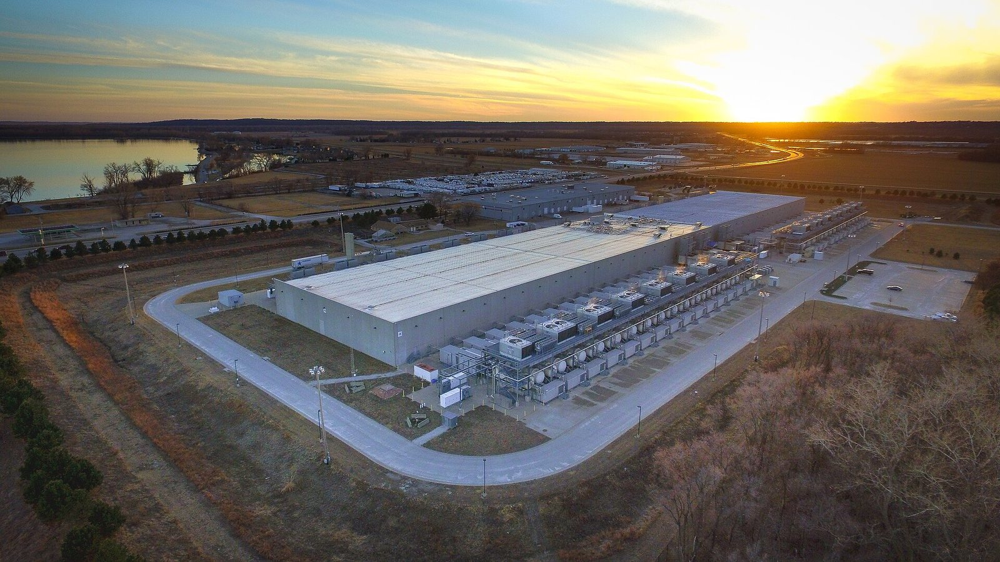

Wall Street chiude giovedì 22 ottobre 2026 spaccata in due. Il Nasdaq Composite perde il 2,6% fermandosi a 26.008,86 punti, l'S&P 500 cede l'1,21% a 7.663,43, mentre il Dow Jones chiude sostanzialmente invariato a 52.867,98, in rialzo di appena 11,89 punti (+0,02%). È la seconda seduta consecutiva di vendite concentrate sui tecnologici, dopo il ribasso di mercoledì che per il Nasdaq era stato il peggiore da giugno.
Perché conta: quando due indici della stessa borsa si muovono in direzioni opposte nello stesso giorno, non è il mercato a scendere — è un pezzo di mercato. Qui il pezzo è quello che vive di intelligenza artificiale, e il problema che lo sta frenando non è più se la tecnologia funziona, ma chi mette i soldi per costruirla.
Le chiusure del 22 ottobre 2026
| Indice | Chiusura | Variazione giornaliera |
|---|---|---|
| Dow Jones Industrial Average | 52.867,98 | +11,89 pt (+0,02%) |
| S&P 500 | 7.663,43 | −1,21% |
| Nasdaq Composite | 26.008,86 | −2,6% |
| Treasury 10 anni (rendimento) | sotto il 5% | in calo |
Le parole che hanno mosso il mercato
Il catalizzatore della giornata è arrivato da Berlino. A margine del GTC, la conferenza di Nvidia, l'amministratore delegato Jensen Huang ha parlato a CNBC dei neocloud — gli operatori specializzati che affittano potenza di calcolo per l'intelligenza artificiale, come CoreWeave e Nebius. La domanda per i loro servizi, ha detto, è «fuori scala» (off the charts). Il problema è un altro:
La domanda di capitale è molto maggiore della disponibilità di capitale. Si risolverà.
È una frase che, letta da un investitore, dice due cose insieme. La prima è rassicurante: i clienti vogliono comprare più di quanto si riesca a produrre. La seconda molto meno: chi dovrebbe costruire i centri dati non trova abbastanza denaro per farlo, e i centri dati sono il canale attraverso cui la domanda di chip diventa fatturato. I trader di Wells Fargo hanno attribuito proprio a queste parole il nervosismo della seduta, osservando che hanno riacceso le preoccupazioni sul lato del credito.
La reazione più netta è arrivata su CoreWeave, tra i maggiori operatori neocloud, che ha perso il 10%: è la società che più di tutte ha finanziato con debito la costruzione dei propri centri dati, e quindi quella più esposta se il capitale diventa caro o scarso. Nvidia ha ceduto circa il 3%.
💡 Impara: che cos'è un neocloud
I neocloud sono operatori nati per affittare potenza di calcolo specializzata nell'intelligenza artificiale, in concorrenza con i grandi del cloud tradizionale (Amazon, Microsoft, Google). Il loro modello è semplice e rischioso insieme: comprano enormi quantità di acceleratori, costruiscono centri dati e li affittano a chi addestra modelli. Semplice, perché la domanda oggi supera l'offerta. Rischioso, perché l'investimento va fatto tutto prima — spesso a debito — mentre i ricavi arrivano negli anni successivi. Per questo il costo del denaro conta per loro molto più che per un'azienda di software: non è una voce di bilancio, è il presupposto del modello.
Meta e il flusso di cassa diventato negativo
Sullo stesso tema si è mosso anche il titolo di Meta, in calo del 7% dopo che i conti trimestrali hanno mostrato un flusso di cassa libero negativo: la spesa per l'infrastruttura di intelligenza artificiale ha superato la cassa generata dall'attività. Per una società abituata a produrre liquidità in abbondanza, è un passaggio che il mercato legge come il prezzo della corsa all'AI.
💡 Impara: perché il flusso di cassa libero conta più dell'utile
Il flusso di cassa libero (free cash flow) è il denaro che resta dopo aver pagato i costi di gestione e gli investimenti. L'utile si può influenzare con scelte contabili — su come si ammortizza un impianto, per esempio — mentre la cassa o c'è o non c'è. Quando una società con utili solidi registra un flusso di cassa libero negativo, significa che sta investendo più di quanto incassa: non è di per sé un male, dipende da cosa sta costruendo e da quanto renderà. È però il momento in cui gli investitori smettono di guardare la crescita e cominciano a chiedere quando arriva il ritorno.
La divergenza tra Dow e Nasdaq
La distanza tra un Dow fermo e un Nasdaq a −2,6% è il dato più informativo della giornata. I due indici misurano cose diverse: il Dow raccoglie trenta grandi società industriali, finanziarie e di consumo; il Nasdaq Composite ne comprende migliaia, con un peso enorme della tecnologia. Quando il primo tiene e il secondo cade, il mercato non sta esprimendo un giudizio sull'economia americana, ma su un singolo tema di investimento.
Nella stessa direzione va il rendimento del Treasury a dieci anni, tornato sotto il 5%. Se il timore fosse l'inflazione o un rialzo dei tassi, i rendimenti sarebbero saliti; il fatto che siano scesi mentre i tecnologici perdevano indica che il denaro si è spostato verso i titoli di Stato — il movimento tipico di chi riduce il rischio, non di chi teme la Banca centrale.
💡 Impara: leggere la rotazione guardando due indici
Confrontare il Dow con il Nasdaq nella stessa giornata è uno dei modi più rapidi per capire che tipo di seduta è stata. Se scendono insieme, il problema è generale: un dato macroeconomico, una banca centrale, una crisi geopolitica. Se uno tiene e l'altro crolla, siamo davanti a una rotazione settoriale: i capitali escono da un comparto e si spostano altrove, restando però investiti. La prima situazione tende a riguardare tutti i portafogli; la seconda penalizza soprattutto chi è concentrato su un solo tema.
Che cosa osservare adesso
La domanda aperta non è se l'intelligenza artificiale serva — su quello il mercato non discute più. È se chi costruisce l'infrastruttura riesca a finanziarla a un costo sostenibile. I segnali da seguire nelle prossime settimane sono tre: il costo del debito per gli operatori neocloud, visibile nei rendimenti delle loro obbligazioni; il capitale investito dichiarato dai grandi del cloud nelle trimestrali, che dice se la spesa rallenta davvero; e la reazione dei titoli dei semiconduttori, che sono l'anello finale della catena e quindi i primi a risentire di un rallentamento degli ordini.
📌 Da ricordare — 22 ottobre 2026
Dow Jones 52.867,98 (+11,89 pt, +0,02%) · S&P 500 7.663,43 (−1,21%) · Nasdaq Composite 26.008,86 (−2,6%) · Seconda seduta consecutiva di vendite sui tecnologici · Jensen Huang al GTC di Berlino: domanda neocloud «fuori scala», ma «la domanda di capitale è molto maggiore della disponibilità di capitale» · CoreWeave −10% · Nvidia circa −3% · Meta −7% con flusso di cassa libero negativo · Treasury 10 anni tornato sotto il 5%
Nota metodologica: i valori di chiusura sono rilevati da fonti pubbliche di mercato al termine della seduta del 22 ottobre 2026 e verificati su più fonti indipendenti. Le dichiarazioni di Jensen Huang provengono dall'intervista rilasciata a CNBC a margine del GTC di Berlino e sono tradotte dall'originale inglese. Le variazioni percentuali si riferiscono alla singola seduta salvo diversa indicazione. Questo articolo ha finalità informative ed educative e non costituisce consulenza finanziaria.